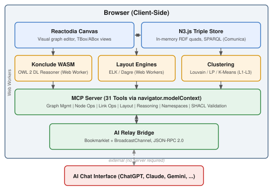

Ontosphere: A Zero-Install Semantic Web Workbench with In-Browser OWL 2 DL Reasoning
Abstract
Ontology engineering has traditionally required installing desktop applications such as Protégé or deploying server-side infrastructure, creating a significant barrier to entry for newcomers, educators, and practitioners who need to explore or author knowledge graphs quickly. We present Ontosphere, a zero-install, browser-based semantic web workbench that runs entirely client-side. Ontosphere integrates an in-memory RDF triple store (N3.js), a visual graph editor (Reactodia), and — to our knowledge — the first in-browser OWL 2 DL reasoner, achieved by compiling Konclude to WebAssembly with SharedArrayBuffer-backed threading. The system further exposes 31 tools via the Model Context Protocol (MCP), enabling any MCP-compatible AI agent to manipulate, reason over, and validate knowledge graphs through natural-language interaction. A bookmarklet-based AI Relay Bridge extends this integration to arbitrary AI chat interfaces without requiring API keys or server infrastructure. Ontosphere is available as a live deployment at https://thhanke.github.io/ontosphere/ under the Apache 2.0 licence.
Keywords
- Ontology Engineering
- Semantic Web
- OWL 2 DL Reasoning
- Knowledge Graph Visualization
- Model Context Protocol
- Browser-Based Tools
Introduction
Ontology engineering remains a cornerstone of the Semantic Web, yet the tools available for building and exploring ontologies impose substantial prerequisites. Protégé [5], the de facto standard, requires a Java runtime and local installation. Server-based platforms such as Vitro demand deployment infrastructure and system administration. Even lightweight visualisation tools like WebVOWL [6] offer read-only views without editing or reasoning capabilities. These requirements create friction in educational settings, collaborative workshops, and rapid prototyping scenarios where participants may lack the ability or permission to install software.
We address this gap with Ontosphere, a semantic web workbench that runs entirely in the browser. A user opens a URL and immediately has access to a full-featured ontology editor with visual graph authoring, OWL 2 DL reasoning, SHACL validation, and AI-agent integration — with no installation, no server, and no account creation. All computation, including description-logic inference, executes client-side via Web Workers and WebAssembly.
The contributions of this work are threefold:
- In-browser OWL 2 DL reasoning. We compile the Konclude tableau reasoner [1] to WebAssembly and execute it in a SharedArrayBuffer-backed Web Worker, providing full SROIQ(D) expressivity within the browser — a capability not previously available in any browser-based ontology tool.
- A 31-tool MCP surface for AI integration. Ontosphere exposes a comprehensive Model Context Protocol [4] server that allows any MCP-compatible AI agent to build, query, reason over, and export knowledge graphs programmatically.
- Zero-install architecture. The entire system — triple store, reasoner, layout engines, graph editor, and MCP server — is packaged as a static single-page application served from a CDN, requiring only a modern browser with SharedArrayBuffer support.
System Overview
Ontosphere is implemented as a Vite-bundled React single-page application (v1.4.1) in which all data processing occurs client-side. The architecture comprises six principal components, each running in the browser without server dependencies (see Fig. 1).

RDF Triple Store. An in-memory quad store powered by N3.js [3] serves as the single source of truth. The store manages three named graphs: urn:vg:data for asserted triples, urn:vg:inferred for reasoner-derived triples, and urn:vg:shapes for SHACL constraints. The store supports loading from Turtle, JSON-LD, RDF/XML, N-Triples, and N3 serialisations, as well as from SPARQL endpoints and Apache Fuseki datasets. A Comunica-based SPARQL engine provides SELECT, CONSTRUCT, and UPDATE query capabilities over the store.
Visual Graph Editor. The Reactodia [2] canvas provides an interactive workspace with pan, zoom, minimap navigation, and entity-group support. Ontosphere extends Reactodia with an always-on authoring mode: users add nodes via search, draw edges by dragging a halo handle between nodes, and edit annotation properties inline. The canvas maintains two views — TBox (classes and properties) and ABox (individuals) — each with independent fold state.
OWL 2 DL Reasoner. The Konclude reasoner [1], a complete tableau reasoner for the description logic SROIQ(D), is compiled to WebAssembly and executed in a dedicated Web Worker with SharedArrayBuffer-backed pthreads. Reasoning completes in 250 ms–2.5 s for typical benchmark ontologies (LUBM, GALEN, Pizza). Inferred triples are visually distinguished with amber dashed edges and italic type annotations. Automatic OWL DL consistency checking runs alongside inference, reporting per-entity clash details when contradictions are detected.
Layout Engines. Multiple graph layout algorithms — Dagre [8] (horizontal/vertical) and ELK [8] (layered, force, stress, radial) — run as Web Workers to maintain UI responsiveness. Spacing is adjustable and re-layout triggers automatically on graph changes when auto-layout is enabled.
Hierarchical Clustering. A three-level fold hierarchy manages visual complexity for large graphs. Level L1 controls per-node annotation property visibility. Level L2 collapses subclass chains and OWL collection axioms into representative group nodes. Level L3 applies community-detection algorithms — Louvain [10], Label Propagation, or K-Means — and activates automatically above a configurable node threshold.
MCP Server and AI Relay Bridge. Ontosphere registers 31 tools with the browser’s navigator.modelContext API, organised into seven categories: graph management, node operations, link operations, layout and navigation, reasoning, namespace management, and SHACL validation. For AI chat interfaces that lack native MCP support, the AI Relay Bridge provides a bookmarklet-based integration: a browser-side script watches the AI’s output for JSON-RPC 2.0 tool calls, executes them in Ontosphere via a BroadcastChannel, and injects results back into the chat input — requiring no server, extension, or API keys.
Key Features and Novel Contributions
In-Browser OWL 2 DL Reasoning
Existing browser-based ontology tools are limited to lightweight reasoning profiles. WebVOWL [6] provides no reasoning at all. OWL 2 EL reasoners have been demonstrated in JavaScript, but the full OWL 2 DL profile — encompassing SROIQ(D) with nominals, number restrictions, role chains, and full Boolean class constructors — has not previously been available in the browser. Ontosphere achieves this by packaging the Konclude reasoner [1] as a WebAssembly binary with pthread support via SharedArrayBuffer. The reasoner runs in a dedicated Web Worker, preserving UI responsiveness during classification. This approach supports all OWL 2 DL constructs including owl:someValuesFrom, owl:allValuesFrom, owl:hasValue, owl:intersectionOf, owl:unionOf, owl:complementOf, owl:propertyChainAxiom, and cardinality restrictions. The bundled reasoning demo exercises 13 distinct OWL 2 DL construct patterns on a small employee ontology.
MCP Tool Surface for AI Agents
Ontosphere exposes 31 tools via the Model Context Protocol [4], organised into seven categories: (1) graph management — loading RDF from URLs or inline Turtle, querying via SPARQL, and exporting in multiple serialisations; (2) node operations — creating, removing, expanding, filtering, inspecting, and updating entities; (3) link operations — asserting and removing triples, listing edges; (4) layout and navigation — applying layout algorithms, panning to nodes, fitting the viewport, switching TBox/ABox views, neighbourhood exploration, and path finding; (5) reasoning — triggering OWL 2 DL inference and clearing inferred triples; (6) namespace management — registering, removing, and listing IRI prefixes; and (7) SHACL validation — loading shapes and validating the data graph. This tool surface enables AI agents to perform complete ontology engineering workflows: from loading an upper ontology, through authoring classes and individuals, to running reasoning and exporting the result — all through natural-language interaction.
AI Relay Bridge
While the MCP server supports programmatic access via navigator.modelContext and headless browser automation (e.g., Playwright), many users interact with AI through web-based chat interfaces such as ChatGPT, Claude.ai, or Gemini. The AI Relay Bridge addresses this by using a bookmarklet that injects a DOM-level relay script into the AI chat tab. The script monitors the AI’s output for backtick-wrapped JSON-RPC 2.0 tool calls, routes them to Ontosphere via a BroadcastChannel popup, and injects the JSON-RPC response back into the chat input field. This mechanism requires no server infrastructure, no browser extension, and no API keys — only a bookmarklet click.
SHACL Validation
Ontosphere supports SHACL [7] constraint validation alongside OWL 2 DL reasoning, addressing two complementary quality assurance needs: logical consistency (via Konclude) and data-shape conformance (via rdf-validate-shacl). Shapes can be loaded as inline Turtle through the loadShacl MCP tool, and validation results include structured violation reports with focus nodes, constraint paths, and human-readable messages.
Three-Level Hierarchical Clustering
To manage the visual complexity of large ontologies, Ontosphere implements a three-level fold hierarchy. L1 controls per-node annotation property visibility. L2 collapses subclass chains and OWL collection axioms (owl:intersectionOf, owl:unionOf) into representative group nodes. L3 applies community-detection clustering using Louvain [10], Label Propagation, or K-Means, and activates automatically when the node count exceeds a configurable threshold. Each TBox and ABox view maintains independent fold state, allowing users to work at different levels of abstraction simultaneously.
Demo Scenario
The live demonstration follows a three-minute walkthrough designed to showcase Ontosphere’s core capabilities through a continuous narrative rather than a feature checklist. The demo is available at https://thhanke.github.io/ontosphere/.
Zero-install entry (0:00–0:25). The presenter opens the Ontosphere URL in a standard browser. No software installation, login, or configuration is required. An OWL 2 DL ontology (the bundled reasoning demo with 13 classes, 11 properties, and 8 individuals) loads automatically via URL parameter.
Navigation and exploration (0:25–0:40). The presenter toggles between TBox (class/property) and ABox (individual) views, uses the search box to locate entities by label, and demonstrates zoom, pan, and minimap navigation.
Visual authoring (0:40–1:10). A new owl:Class (ex:Intern) is created via search, connected to the existing ex:Employee class by dragging the halo link handle to establish an rdfs:subClassOf edge, and annotated with an rdfs:comment through the inline property editor. The undo/redo capability is demonstrated.
Clustering and fold levels (1:10–1:30). The L2 structural fold is toggled to show expansion and re-collapse of subclass chains. Louvain community-detection clustering (L3) groups nodes into colour-coded communities, illustrating how the system manages visual complexity on larger ontologies.
OWL 2 DL reasoning (1:30–2:00). The presenter triggers Konclude reasoning. Inferred triples appear as amber dashed edges and italic type annotations. The reasoning report is opened to inspect derived triples, including domain-based type inference (ex:Dave inferred as ex:Manager) and existential restrictions (ex:Alice inferred as ex:ProjectContributor).
SHACL validation (2:00–2:15). SHACL shapes are loaded via an MCP tool call, and the data graph is validated. Constraint violations are reported with focus-node and path details.
AI Relay Bridge (2:15–2:45). The bookmarklet is activated on an AI chat tab. The AI sends a JSON-RPC tool call via the relay, creating a new node in Ontosphere. The round-trip — from AI output to Ontosphere execution to result injection — completes without any server intermediary.
Export (2:45–3:00). The graph is exported as Turtle. The namespace legend demonstrates live URI renaming with propagation across all stored triples.
Individual feature screencasts are available for each capability described above:
- Zero-install entry & RDF loading (~25 s)
- Visual exploration (~30 s)
- Canvas authoring (~27 s)
- Hierarchical clustering (~14 s)
- OWL 2 DL reasoning (~24 s)
- SHACL validation (~25 s)
- MCP & AI Relay Bridge (~23 s)
References
- Steigmiller, A., Liebig, T., Glimm, B.: Konclude: System description. J. Web Semantics 27–28, 78–85 (2014). https://doi.org/10.1016/j.websem.2014.06.003
- Mouromtsev, D., Pavlov, D., Emelyanov, Y., Morozov, A., Razdyakonov, D., Galkin, M.: The Simple Web-based Tool for Visualization and Sharing of Semantic Data and Ontologies. In: ISWC 2015 Posters & Demos (2015). See also: https://github.com/reactodia/reactodia-workspace
- Verborgh, R., Taelman, R.: N3.js: An open-source JavaScript library for RDF. https://github.com/rdfjs/N3.js
- Anthropic: Model Context Protocol Specification. https://modelcontextprotocol.io (2024).
- Musen, M.A.: The Protégé project: A look back and a look forward. AI Matters 1(4), 4–12 (2015). https://doi.org/10.1145/2757001.2757003
- Lohmann, S., Link, V., Marber, E., Negru, S.: WebVOWL: Web-based Visualization of Ontologies. In: EKAW 2014 Satellite Events, pp. 154–158. Springer (2015). https://doi.org/10.1007/978-3-319-17966-7_21
- Knublauch, H., Kontokostas, D.: Shapes Constraint Language (SHACL). W3C Recommendation (2017). https://www.w3.org/TR/shacl/
- Schulze, C.D., Spoenemann, M., von Hanxleden, R.: Drawing Layered Graphs with Port Constraints. J. Visual Languages and Computing 25(2), 89–106 (2014). https://doi.org/10.1016/j.jvlc.2013.11.005
- Grau, B.C., Horrocks, I., Motik, B., Parsia, B., Patel-Schneider, P., Sattler, U.: OWL 2: The Next Step for OWL. J. Web Semantics 6(4), 309–322 (2008). https://doi.org/10.1016/j.websem.2008.05.001
- Blondel, V.D., Guillaume, J.-L., Lambiotte, R., Lefebvre, E.: Fast unfolding of communities in large networks. J. Statistical Mechanics: Theory and Experiment 2008(10), P10008 (2008). https://doi.org/10.1088/1742-5468/2008/10/P10008